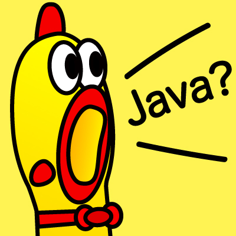
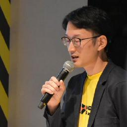

Tatsuya Nibuno / nibu


Pythonを中心にWebアプリケーションをつくっています。
個人では、日々使う小さなツールを作ったり、学んだことを文章や発表にまとめたりしています。
01
つくったもの
-
emoemo — 画面イメージ
-
Voice Input Tool — 画面イメージ
Voice Input Tool
ホットキーを押している間だけ録音し、OpenAI Whisper APIで文字起こしした結果をクリップボードへコピーして自動ペーストするmacOS向けツール。メニューバーアプリとCLIを用意しています。
- 種別
- macOS / CLI
- 技術
- Python / OpenAI Whisper API
- 入力
- Hotkey / Microphone
02
発表と文章
03
経歴
-
新卒入社〜
販促支援から、ものをつくる仕事へ
大学卒業後、ねじの専門商社に新卒入社し、営業部で販促支援業務に従事。仕事の傍らPHPを独学し、社内ポータルサイトを作り直しました。自分の手で作ったものが動き、周囲に使ってもらえることの楽しさを知ったのが、エンジニアを志したきっかけです。
-
実務未経験からエンジニアへ
エンジニア派遣会社へ転職し、基幹システムの保守・運用・開発を経験。エンジニアとして働き始めたこの時期にPythonと出会いました。
-
株式会社ビープラウド
バックエンドを中心にWebアプリケーションを開発。PythonやDjangoを深く学びながら、登壇やブログを通して、試したことや学んだことを継続して発信しています。
nibuとして活動しています。過去にはYumihiki名義でも登壇していました。